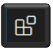
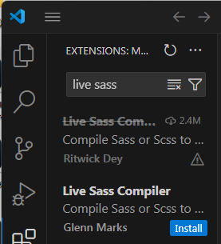
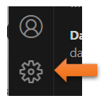
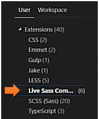
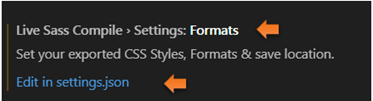
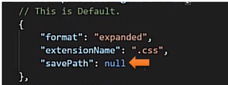
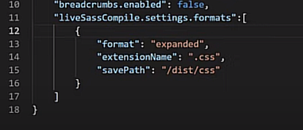
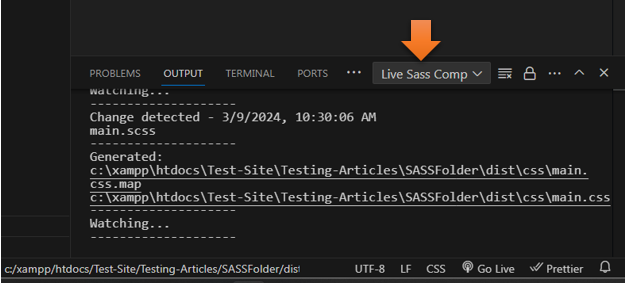

~1 Installing the Programs for SASS~
4/22/2024
What do you need to write this new CSS?
How do we add the SASS Compiler in VS Code?
What is SASS?
Sass is a CSS extension language. In other words, when we use Sass, we can do more cool stuff then if we were just resorting to using CSS on its own. The acronym SASS stands for Syntactically Awesome Style sheets. It is completely compatible with all versions of CSS.
The reason that SASS was created was that it reduces the repetition that is sometimes found when using CSS. It also is a timesaver to use. It was introduced in 2006 by Hampton Calin and Natalie Weizenbaum. The best part about SASS is that it is free to use.
What do you need to write this new CSS?
Your browser does not exactly know how to read SASS, so when we write SASS, we will have the extra step of turning it back into CSS, which our browsers do know how to use. This is not exactly all that difficult, as Visual Studio Code has an extension which will do that for us.
These are the things that you are going to need before you can start using SASS.
- Visual Studio Code
- Live Sass Compiler (a Visual Studio Code Extension)
- Live Server (a Visual Studio Code Extension)
How do we add the SASS Compiler in VS Code?
Open Visual Studio Code
Go to your Extension tab on the left side of Program
Put live sass in the search box
Then go to settings in Visual studio at the bottom left
Search for sass
You want to be able to edit in json
Scroll down until you see the format settings. Click the link Edit in settings.json
We want to change where we want to save our SASS to, by default it will say null
We want to save our stuff to the dist folder, and we can do that by changing it to this.
Watch it, while you are still in Setting you must select Watch SASS at the bottom of the task bar.
Make sure you are set to LIVE SASS COMP in the OutPut
Then you should be seeing this in the output tab
